第二章 随机变量及其概率分布¶
0 总结¶
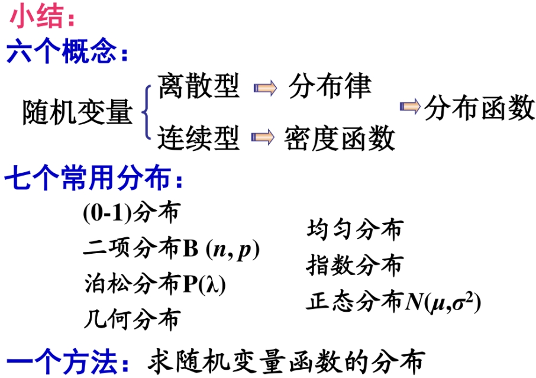
1 随机变量及其分布函数¶
-
对于随机试验的样本空间 \(\Omega\)，若其中每一个样本点 \(\omega \in \Omega\)，都有一个实数 \(x\) 与其相对于，则称 \(X = X(\omega)\) 为随机变量。
-
设 \(X\) 是一随机变量， \(x\) 是任意实数，称 \(F(x) = P\{X \le x\},(-\infty < x < \infty)\) 为随机变量 \(X\) 的函数
\(F(x)\) 函数值分布在 \(0 \sim 1\) 之间，是单调不减的，且具有右连续性，\(F(x^+) = F(x)\)。
\(F(-\infty) = 0\)，\(F(\infty) = 1\)
\(P\{a < X \le b\} = F(b) - F(a)\)
2 离散型随机变量及其概率分布¶
-
若随机变量 \(X\) 可取到的不同值是有限个或可列无限多个项，并且以确定的概率取这些值，则称 \(X\) 为离散型随机变量。
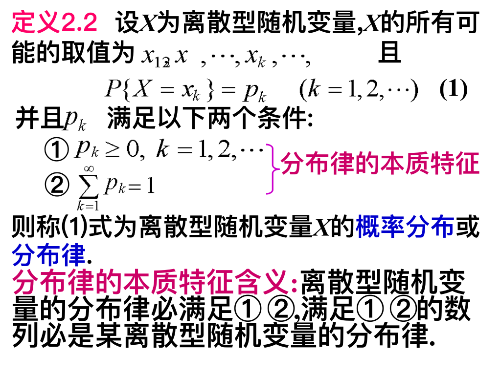

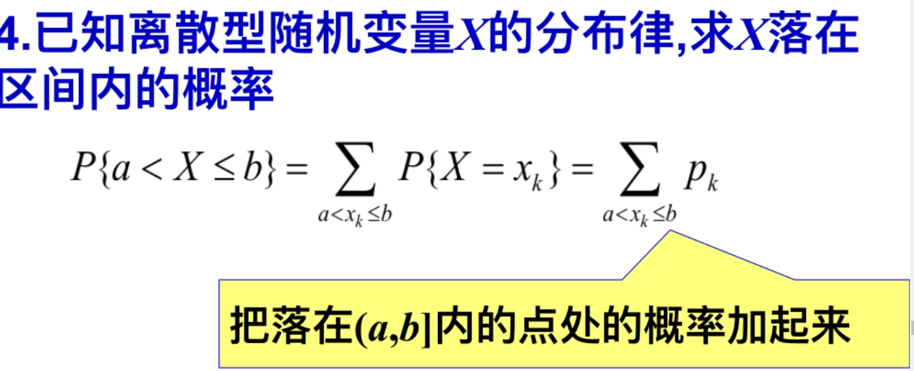
3 连续型随机变量及其概率密度¶
-
与离散相对应的便是连续型。\(f(x)\) 是概率密度函数，简称概率密度，满足 \(F(x) = P\{X \le x\} = \int_{-\infty}^{x}f(t)dt\)。
值得注意的是，连续型的分布函数 \(F(x)\) 在 \((-\infty, +\infty)\) 但概率密度 \(f(x)\) 不一定连续，也不唯一。（注意，这里不唯一可以体现在，改变有限个 \(f(x)\) 点的取值，并不影响 \(F(x)\)）
-
概率密度 \(f(x)\) 性质
- \(f(x) \ge 0\)
- \(\int_{-\infty}^{+\infty}f(x)dx = 1\)。
- \(P\{a < X \le b\} = F(b) - F(a) =\int_{a}^{b}f(x)dx\)。
- 在 \(f(x)\) 的连续点处满足 \(f(x) = F'(x)\)。
- \(P\{X = c\} = 0\)。这说明概率为 \(0\) 不一定是不可能事件，概率为 \(1\) 不一定是必然事件。
- $P{a < X < b} = P{a \le X < b} = P{a < X \le b} = P{a \le X \le b} $。
4 几种常用的分布¶
几种常用的离散型随机变量
-
（0 - 1）分布（两点分布）
若随机变量 \(X\) 的分布律为 \(P\{X = 1\} = p\)，\(P\{X = 0\} = 1 - p\) （\(0 < p < 1\)），则满足（0 - 1）分布。
-
二项分布
每次实验只有 \(A\) 和 \(\bar A\) 结果，独立实验 \(n\) 次，用 \(X\) 表示 \(n\) 次实验中 \(A\) 发生的次数，\(P\{x = k\} = C_{n}^{k}p^k(1 - p)^{n - k}\)，则称 \(X\) 服从参数为 \(np\) 的二项分布，记作 \(X \sim B(n, p)\)。
二项分布形状特点
- 二项分布的形状取决于 \(p\) 和 \(n\) 的大小。
- 当 \(p\) 接近 \(0.5\) 时，图形是对称的。
- \(p\) 离 \(0.5\) 越远，对称性越差，但随着 \(n\) 的增大，分布趋于对称。
若 \((n + 1) \cdot p\) 是整数 \(m\)，则 \(P\{X = m\} = P\{X = m - 1\}\) 且在这两处可以取到最大值。
若 \((n + 1) \cdot p\) 不是整数，则令 $m = \left \lfloor (n + 1) \cdot p\right \rfloor $，在 \(P\{X = m\}\) 处可以取到最大值。
-
泊松（Poisson）分布
设 \(X\) 的所有可能取值为 \(0, 1, 2, \dots\)，并且 \(P\{X = k\} = \dfrac{\lambda^ke^{-\lambda}}{k!}(k = 0, 1, 2, \dots)\)，其中 \(\lambda > 0\)，则称 \(x\) 服从泊松分布，记作 \(X \sim P(\lambda)\) 或 \(X \sim \pi(\lambda)\)。
泊松定理：若满足 \(np_n = \lambda\)，则对任一固定的非负整数 \(k\)，有 \(\lim_{n \to \infty}C_{n}^{k}p_n^k(1 - p_n)^{n - k} = \dfrac{\lambda^ke^{-\lambda}}{k!}(k = 0, 1, 2, \dots)\)。（说明了二项分布与泊松分布的关系）
泊松定理说明，泊松分布是二项分布的极限分布，当 \(n\) 很大而 \(p\) 很小时，二项分布可近似看作参数 \(\lambda = np\) 的泊松分布。
Proof
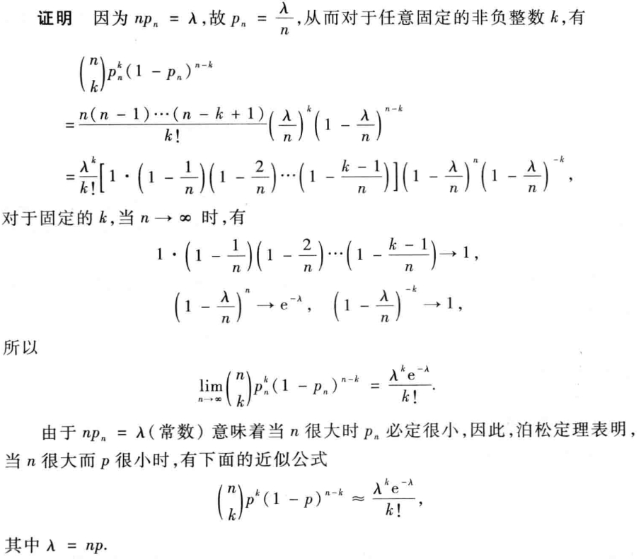
-
几何分布
若某事件只有 \(A\) 和 \(\bar A\) 两种可能，且 \(P(A) = p,P(\bar A) = 1 - p\)，将事件独立重复发生直到出现结果 \(A\) 为止，\(X\) 表示所需试验的次数，则 \(P\{X = k\} = (1 - p)^{k - 1}p\)，称随机变量 \(X\) 服从几何分布，记作 \(X \sim G(p)\)。
-
超几何分布
随机变量 \(X\) 的分布律满足 \(P\{X = m\} = \dfrac{C_M^mC_{N - M}^{n - m}}{C_N^n}\)，则称 \(X\) 服从超几何分布。（可以理解为拿走不放回时的概率）
超几何分布的极限分布是二项分布，二项分布的极限分布是 Poisson 分布。
几种常用的连续型随机变量
-
均匀分布
若连续型随机变量 \(X\) 的概率密度函数为 \(f(x) = \begin{cases} \dfrac{1}{b - a} \ a < x < b\\ 0\ \ \ \ \ \ \ \ \ 其他\end{cases}\)，则称 \(X\) 在区间 \((a, b)\) 上服从均匀分布。
-
指数分布
若连续型随机变量 \(X\) 的概率密度函数为 \(f(x) = \begin{cases} \lambda e^{-\lambda x} \ x > 0\\ 0\ \ \ \ \ \ \ \ \ x \le 0\end{cases}\)，其中 \(\lambda > 0\) 是常数，则称 \(X\) 服从参数为 \(\lambda\) 的指数分布，记为 \(X \sim E(\lambda)\)。
-
正态分布
若连续型随机变量 \(X\) 的概率密度函数为 \(f(x) = \dfrac{1}{\sigma\sqrt{2\pi}}e^{-\dfrac{(x - \mu)^2}{2\sigma^2}}\)，其中 \(-\infty < \mu < +\infty, \sigma > 0\)，则称 \(X\) 服从参数为 \(\mu,\sigma\) 的正态分布，记作 \(X \sim N(\mu, \sigma^2)\)。
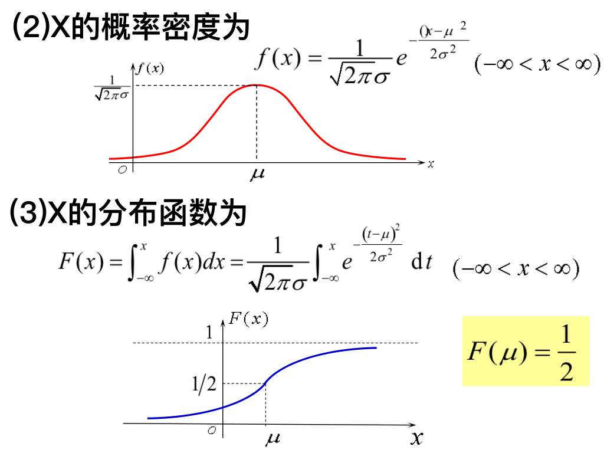
正态分布以 \(\mu\) 为中心，两边对称相等。其中 \(\mu\) 是位置参数，\(\mu\) 变大，图形右移，\(\mu\) 变小，图形左移（\(x = \mu\) 是对称中心）。\(\sigma\) 是形状参数，\(\sigma\) 变大，图形变平坦，\(\sigma\) 变小，图形变陡峭。
-
标准正态分布
若 \(X \sim N(\mu, \sigma^2)\) 且 \(\mu = 0, \sigma = 1\)，则称 \(x\) 服从标准正态分布，记为 \(X \sim N(0, 1)\)。此时概率密度 \(\varphi(x) = \dfrac{1}{\sqrt{2 \pi}}e^{-\dfrac{x^2}{2}}\)，分布函数 \(\Phi(x) = \int_{-\infty}^x \varphi(x)dx\)，且有 \(\Phi(x) + \Phi(-x) = 1\)。
若 \(X \sim N(\mu, \sigma^2)\)，则 \(Y = \dfrac{X - \mu}{\sigma} \sim N(0, 1)\)（正态分布与标准正态分布的关系）。这个关系可以将正态分布的概率计算化为标准正态分布来计算。
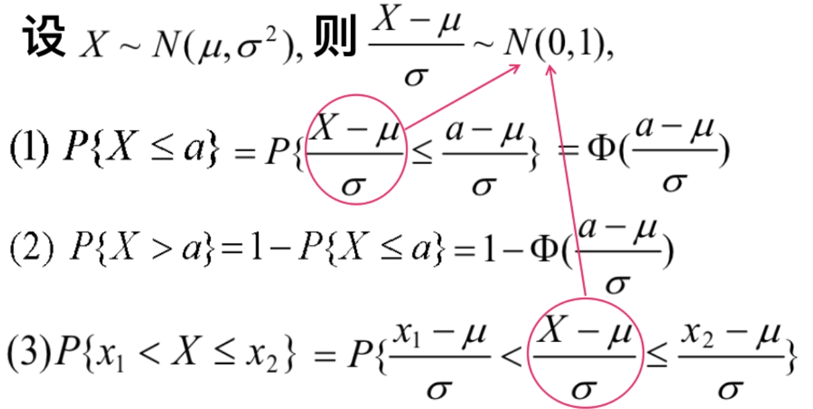
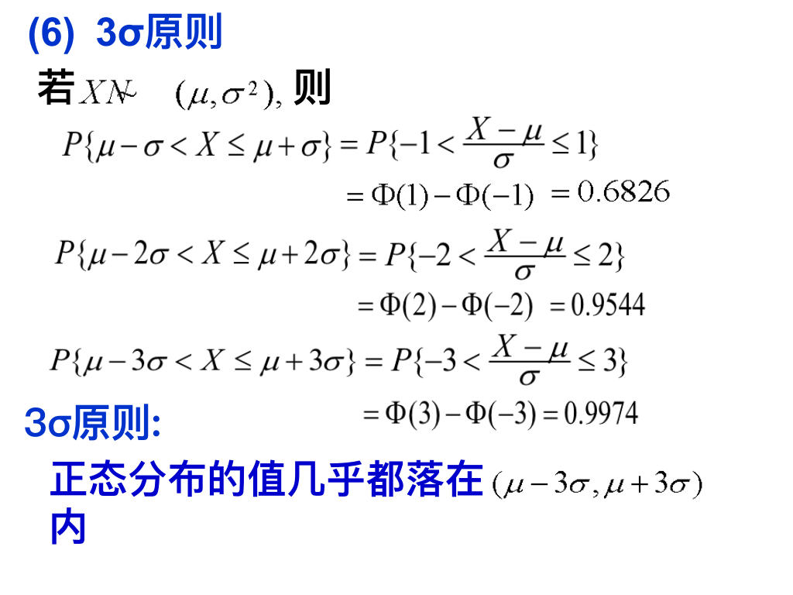

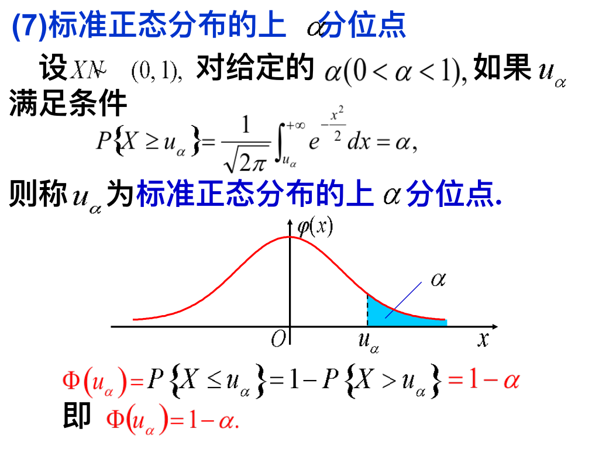
5 随机变量的函数的分布¶
-
常规情况下直接按题意做即可，用一道例题简单说明。

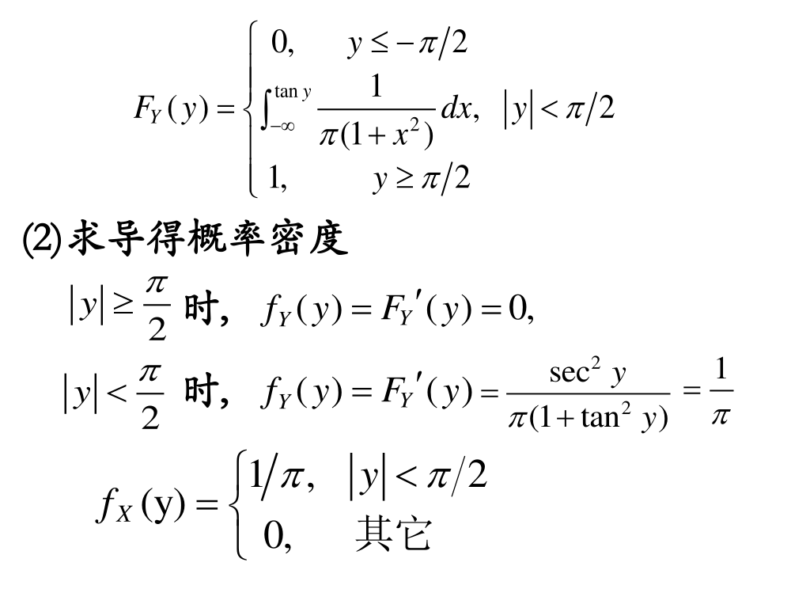
-
特殊情况
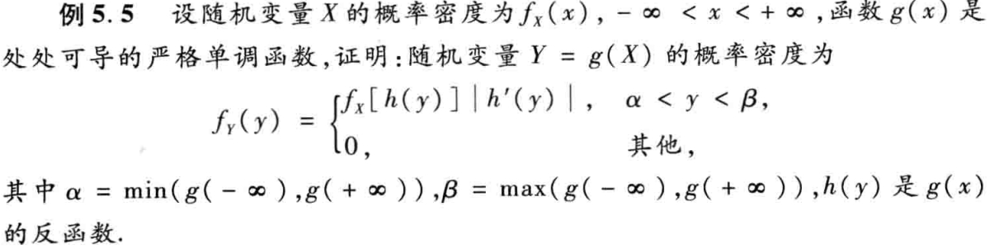
Proof
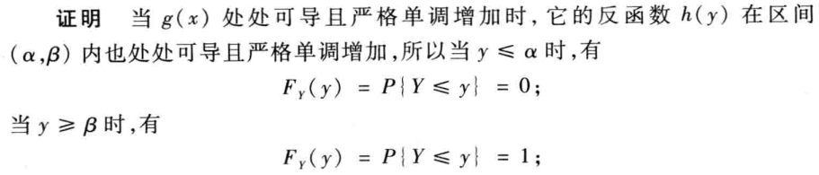
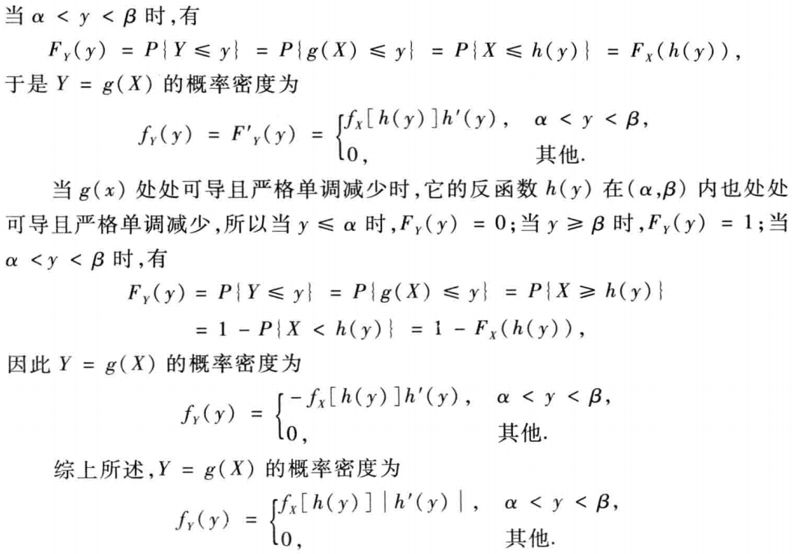

用一道例题具体说明一下该方法的使用

我们根据这种方法可以得出一个有关正态分布的结论：

-
随机变量的函数分布的两种方法
- 一般方法：先求分布函数，再求密度函数的方法。
- 特殊情况：如果 \(Y = g(x)\) 单调可导，利用反函数代入的方法。
6 习题课¶
-
e.g.1
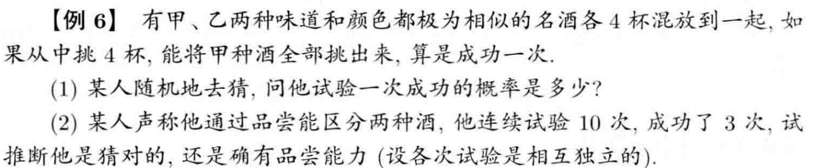
Solution

Note
这题有点类似于第八章假设检验中的右侧检验，假设随机猜的为真，按随即猜测的概率算出的样本事件是小概率事件，故不是猜测的。这里相当于计算落入右边区间的概率。
-
e.g.2

Solution
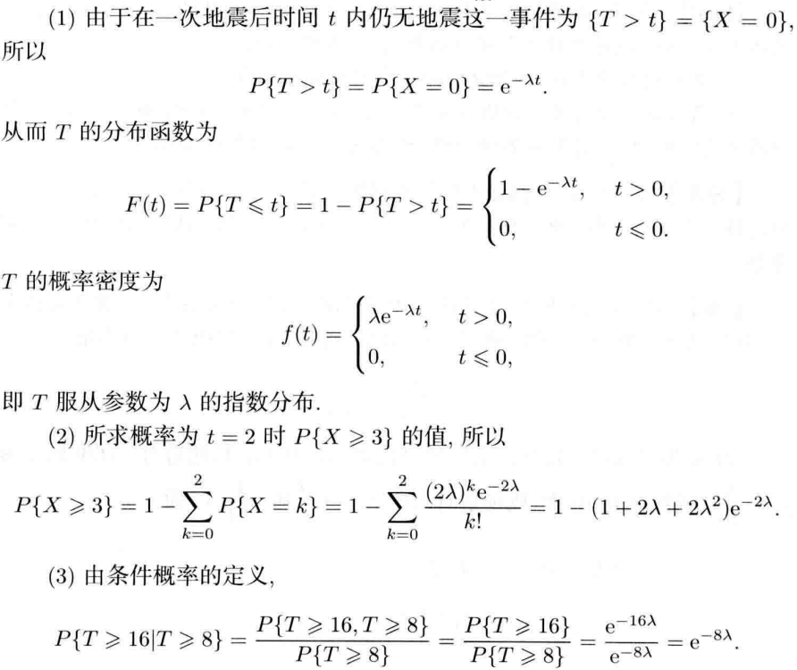
Note
本题有一点绕，分布函数中涉及到了两个变量，一定要弄明白这两个变量在随机函数中的意义和作用。需要注意的是，在第一小问中，令 \(k = 0\)，算出来的是 \(P\{T > t\}\) 的概率而不是 \(P\{T < t\}\) 的概率。
-
e.g.3
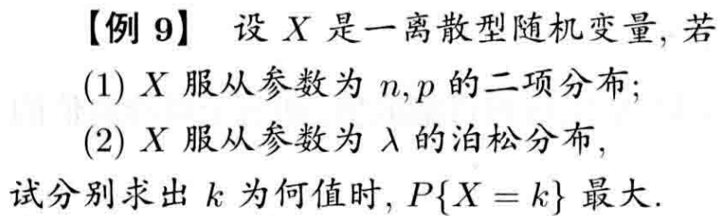
Solution
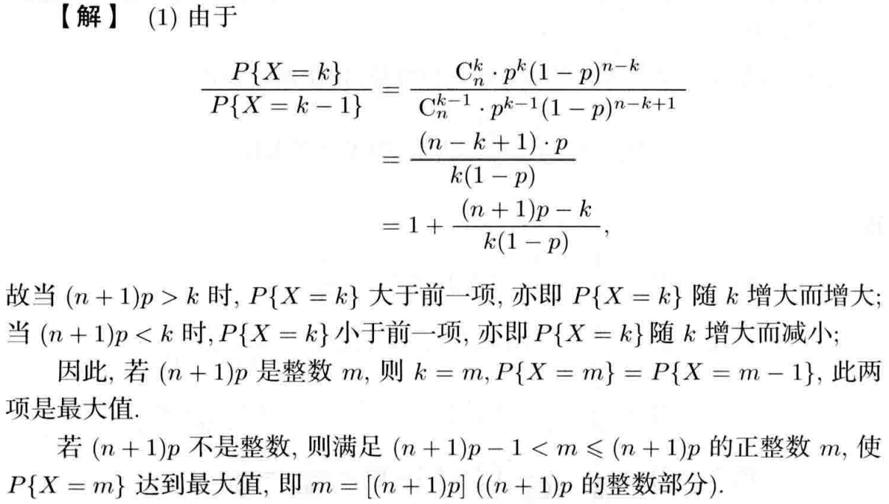
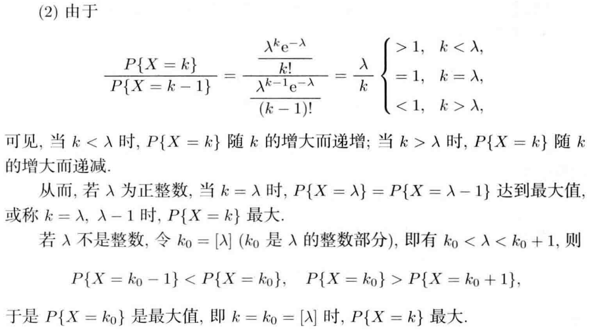
-
e.g.4 又是条件概率的问题，和 chap 1 e.g.10 很像，但是还是做错了 🥲
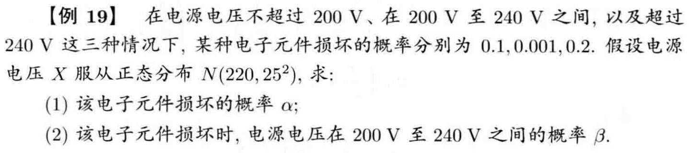
Solution
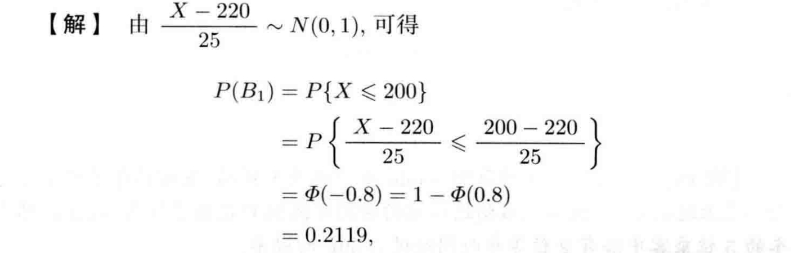
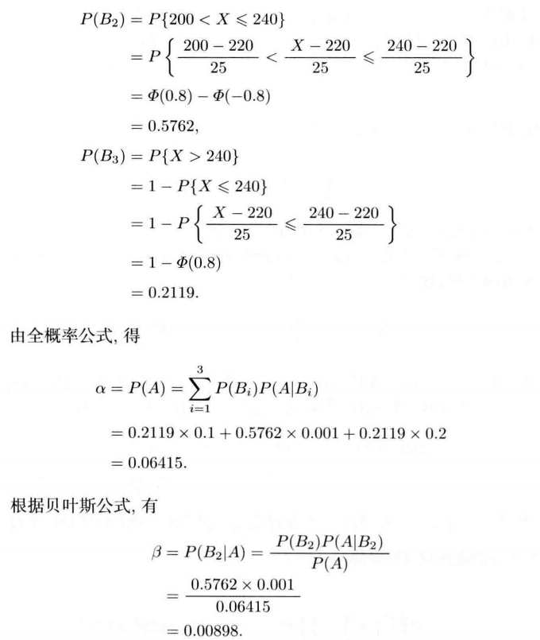
-
e.g.5
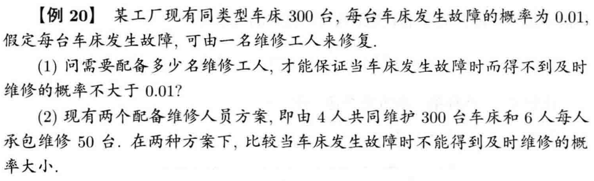
Solution
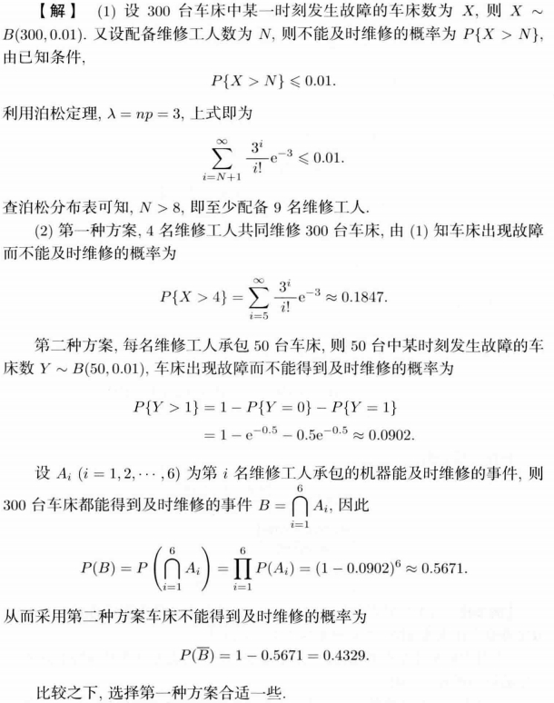
-
e.g.6
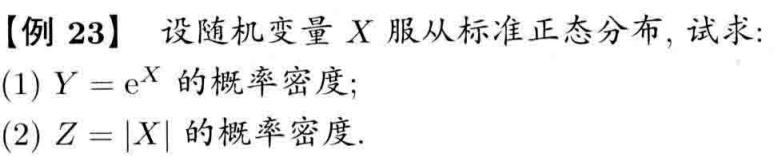
Solution

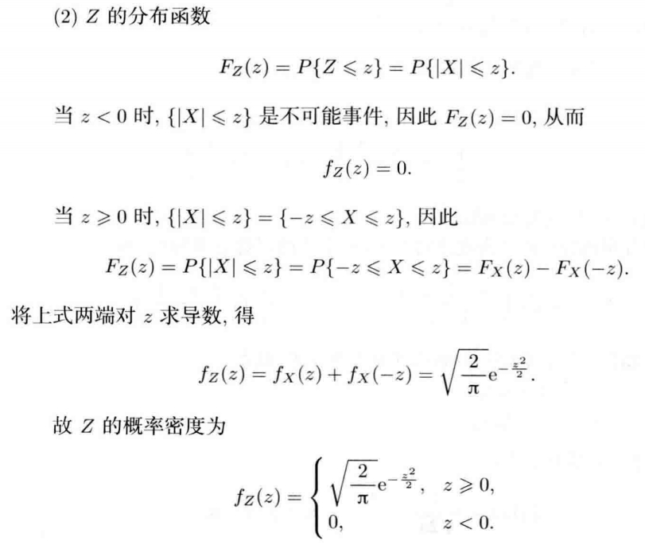
-
e.g.7 注意这里 \(Y\) 表示的是 \(F(X)\) 的数值，这里 \(Y\) 取值范围是 \(0\) 到 \(1\)，相当于求的是 \(F(X)\) 所对应的数值服从的分布。

Solution
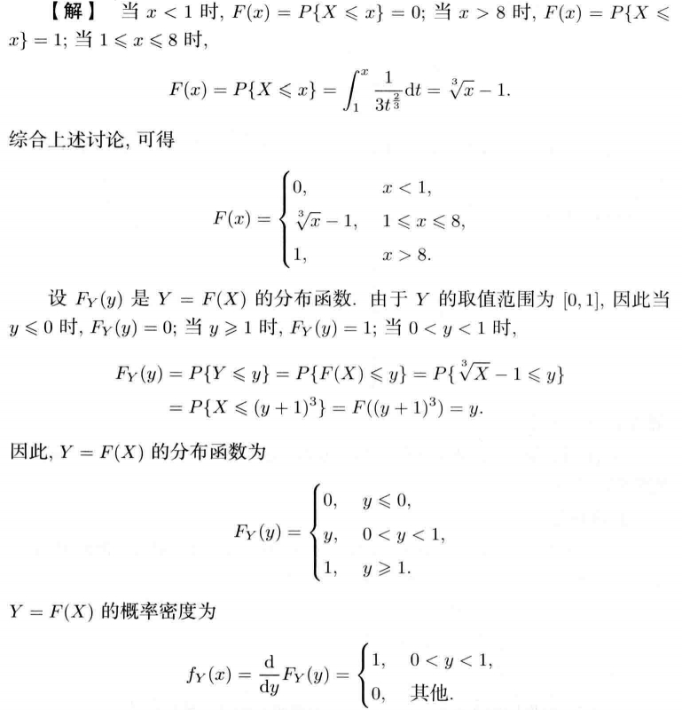